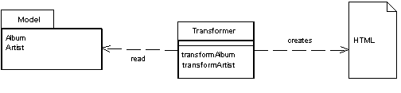

Transform View (Преобразователь)

Паттерн проектирования Transform View
Описание Transform View
Преобразует записи в HTML по одной.
Когда выполняются запросы к БД, вы получаете данные, но этого не достаточно, чтобы отобразить нормальную web-страницу. Задача вида (view) в паттерне MVC - Model View Controller - формировать данные в web-страницу. Использование Transform View подразумевает преобразование, когда на входе есть модель, а на выходе HTML.
Пример: на входе преобразователя модель, содержащая имя альбома (album name) и имя артиста (artist name). На выходе - код
<a href="http://exapmle.com/music/album_name/artist_name">artist name</a>
Использована иллюстрация с сайта Мартина Фаулера.